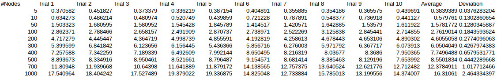
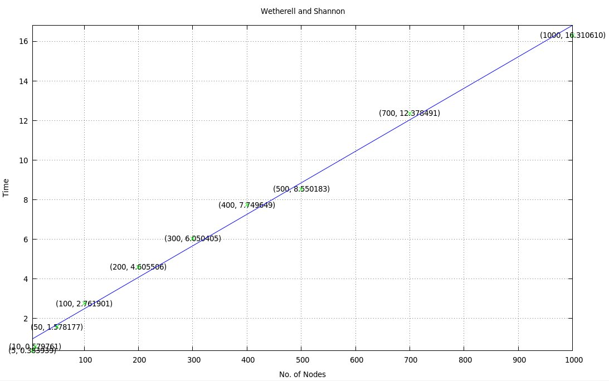
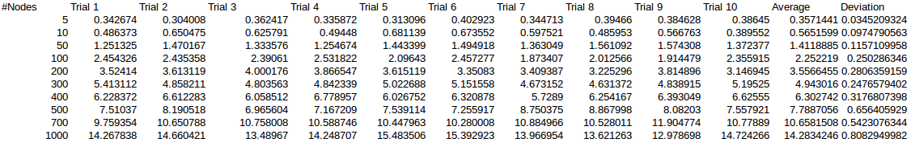
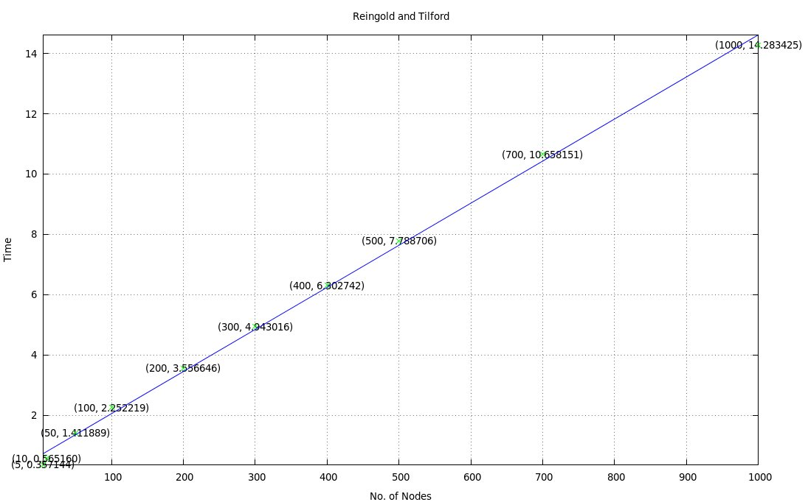
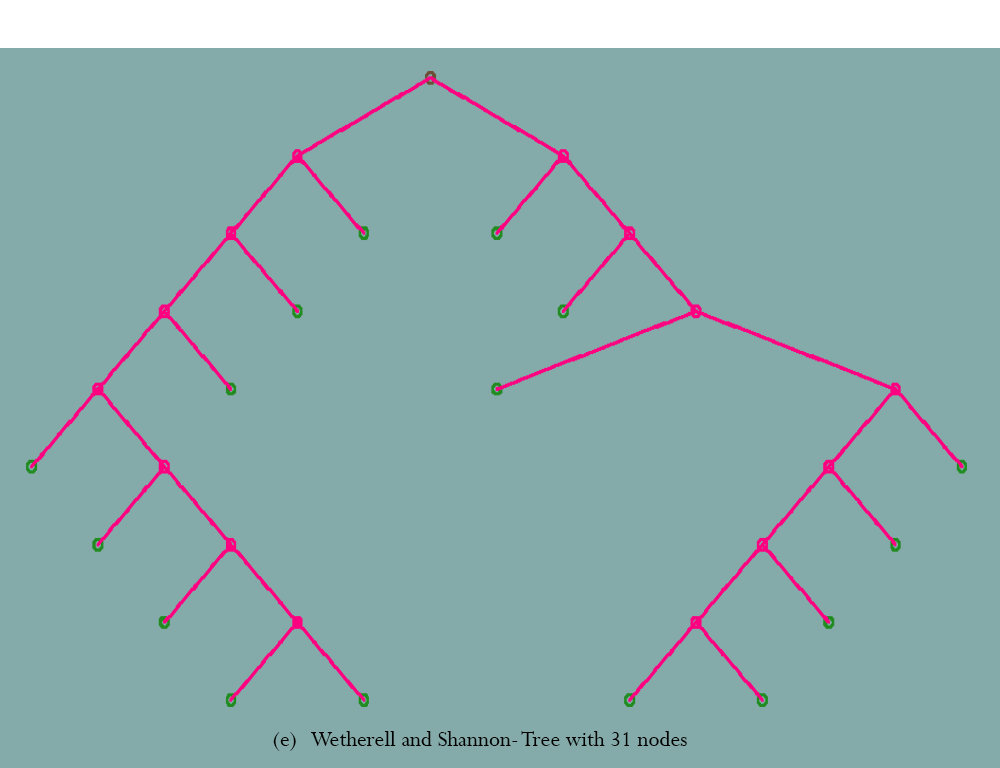
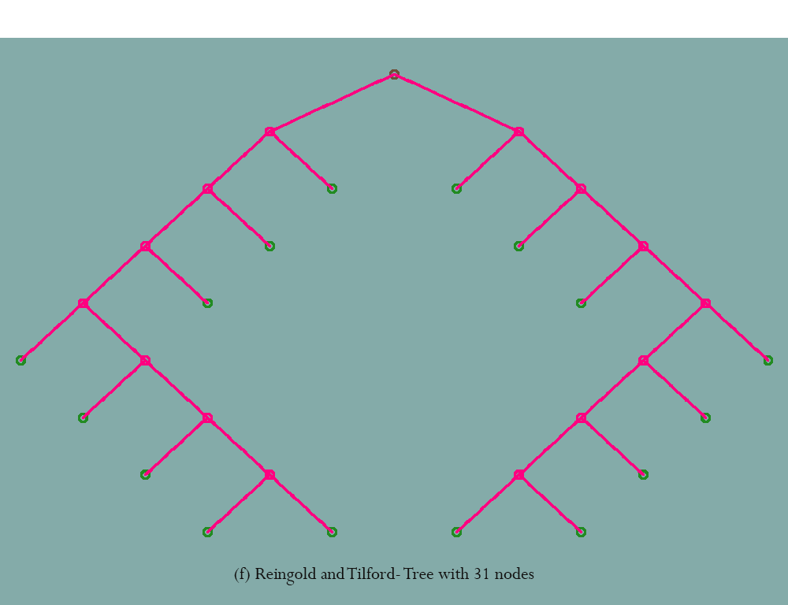

The algorithm was run ten times for each of the input sizes. The average time was plotted against the input size (number of nodes). The trend was found to be almost linear.
 Each instance of the structure node is of size 40 Bytes, assuming that an integer takes 4 Bytes. Given n nodes, this would require 40n Bytes. modifier and next_pos arrays are of size h each. In the best case, they would require 4*log(n) bytes and in the worst case 4*n bytes. Three matrices trans1, trans2 and scale each of size 36 Bytes was used.

The algorithm was run ten times for each of the 9 input sizes. The average time was plotted against the input size (number of nodes). The trend was found to be almost linear.
 Each instance of the structure node is of size 58 Bytes, assuming that an integer takes 4 Bytes. Given n nodes, this would require 56n Bytes. Three matrices trans1, trans2 and scale each of size 36 Bytes was used.
A tree and its mirror image positioned by Reingold and Tilford's algorithm are tidier than those positioned by Wetherell and Shannon's one.
 Reingold and Tilford's algorithm produces a tidier version of the tree. This is because a subtree is drawn the same no matter where in the tree it lies.